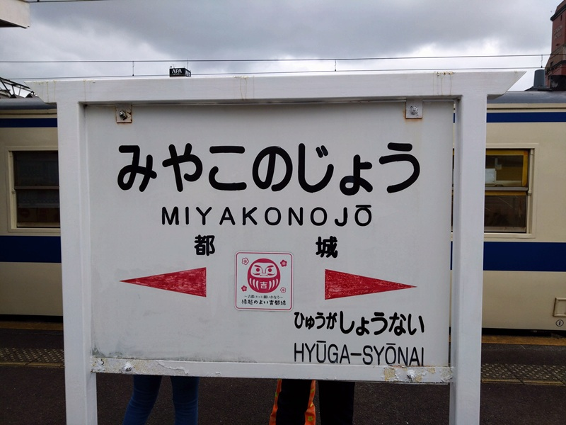
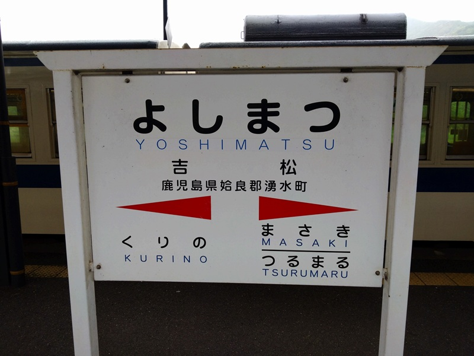
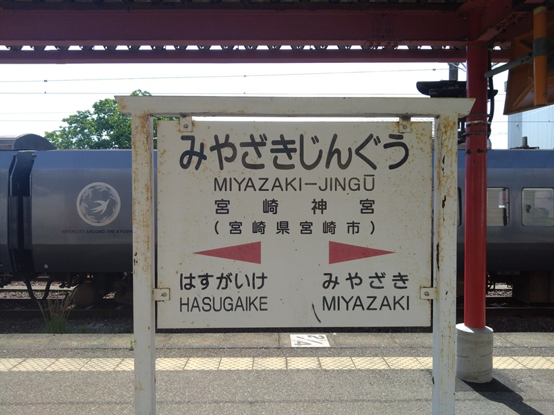
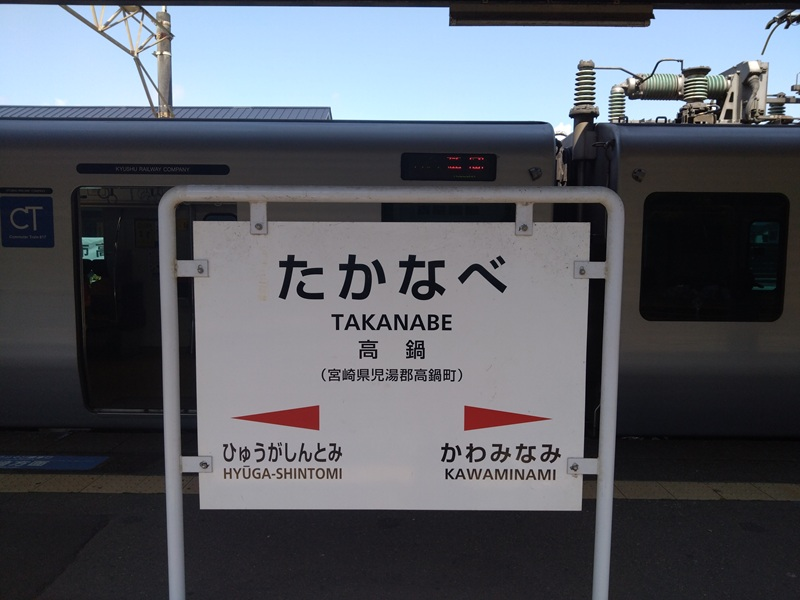
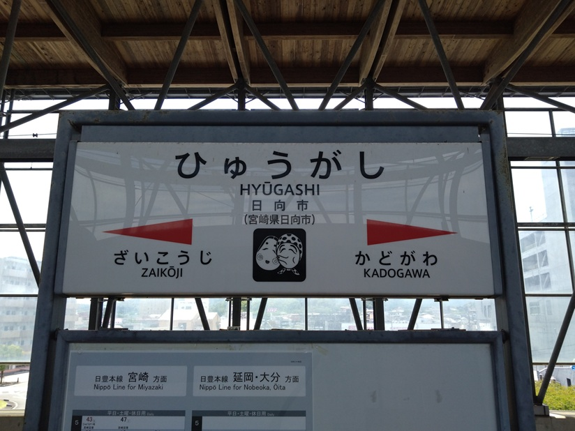
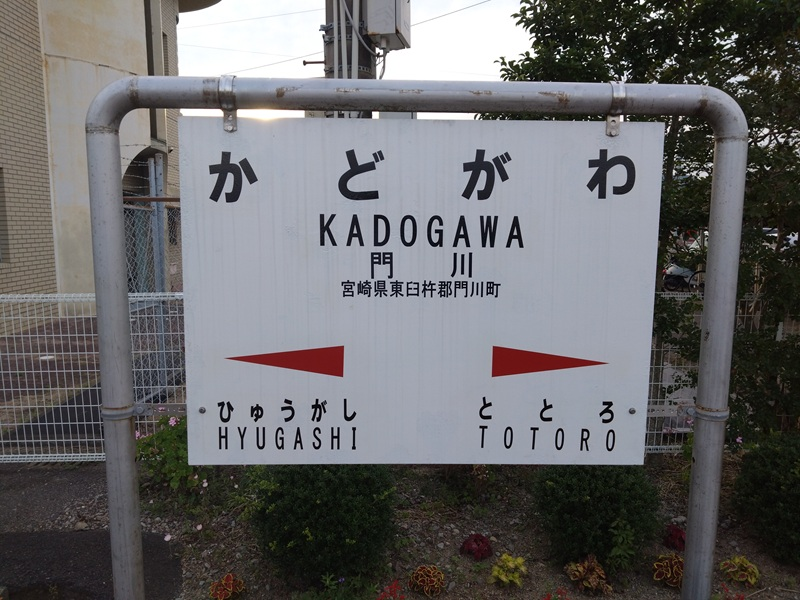

なぜかいろんなフォントが使われている九州の駅名標。 宮崎中心に集めてみました。
都城駅（吉都線ホーム）
後付けのだるまがかわいい。「ひゅうが」がちょっと小さいのも良い。

吉松駅
分岐駅だとこうなる。真幸は宮崎県の駅の中で唯一まだ通っていないので、肥薩線が全線再開することを祈っている。

宮崎神宮駅
またちょっとフォントが違う。 個人的には思い入れが深い駅。

高鍋駅
新しいバージョンの駅名標。たぶん、新ゴDB。 モリサワ HP

日向市駅
ひょっとこ踊りのひょっとこ。これは新しそうだけど、高鍋のとフォントが違う。

門川駅
ひらがなの間隔がやけに広い。門川町は九州の中でトップレベルに幸福度の高い町らしい。

あれ？宮崎駅がない...？
気になった人はネットで調べてみてください。